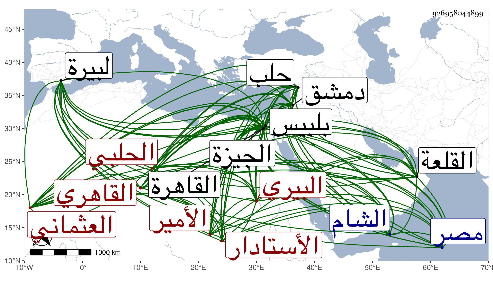

0902Sakhawi.DawLamic.ITO20230111-ara1.EIS1600.926958044899
Biography ID: 926958044899
1157
يوسف بن أحمد بن محمد بن أحمد بن جعفر بن قاسم الأمير الجمال أبو المحاسن العثماني البيري ثم الحلبي ثم القاهري الأستادار أخو الشمس محمد الماضي وكان يعرف أولا بابن الحريري ثم بالقاهرة بأستادار بجاس . ولد سنة اثنتين وخمسين وسبعمائة بالبيرة وكان أبوه خطيبها وصاهر الشمس عبد الله بن يوسف ابن سحلول وزير حلب على أخته فولدت له صاحب الترجمة فهو قريب محمد ابن عبد الرحمن بن يوسف بن سحلول فنشأ في كنف خاله المذكور وكان أولا بزي الفقهاء وحفظ القرآن وكتبا في الفقه والعربية منها ألفية ابن معطي وعرضها على أبي عبد الله بن جابر الأندلسي وأخذ عنه في شرحها له بحلب وسمع عليه بديعيته وغيرها، ثم ارتحل على فاقة عظيمة لدمشق فتزيا للجند وخدم بلاصيا عند الشيخ علي كاشف بر دمشق وغيره . وقدم القاهرة في سنة سبعين فخدم أستادارا عند الأمير بجاس فطالت مدته عنده بحيث تزوج ابنته وعرف به وعظم قدره ومحله ، وكذا باشر الأستادارية عند جماعة من الأمراء كبيبرس الأتابك وسودون الحمزاوي وأثرى وعمر الدور الكبار منها في داخل القصر بجوار المدرسة السابقية منزلا حسنا فيقال أنه وجد فيه خبيئة للفاطميين. واشتهر ذكره بالعصبية والمروءة وقضاء حوائج الناس فقام بأعباء كثير من الأمور وصار مقصدا للملهوفين يقضي حوائجهم ويركب معهم إلى ذوي الجاه فتزايدت وجاهته ونفذت كلمته وصحب سعد الدين إبرهيم بن غراب فنوه بذكره بحيث أنه لما فر يشبك الشعباني ومعه ابن غراب عرض عليه الوزر فأبى وسأل في الأستادارية فاستقر فيها في رجب سنة سبع وثمانمائة بعد أن رسم عليه في بيت شاد الدواوين يوم وليلة وذلك عوض ابن قيمار المستقر بعد ابن غراب فشكرت سيرته مع استمراره على التحدث في أستادارية بيبرس ثم وقع بينه وبين السالمي لتهور السالمي فقبض عليه في ذي الحجة واستبد بالأمر ولم يلبث أن تمكن ابن غراب فرام الفتك بجمال الدين ثم اشتغل عنه بمرضه حتى هلك فاستولى حينئذ على الأمور واستضاف الوزارة ونظر الخاص والكشف بالوجه البحري بل استقر مشير الدولة . ثم لماقتل يشبك صفا له الوقت وصار عزيز مصر على الحقيقة لا يعقد أمر إلا به ولا تنفصل مشورة إلا عن رأيه ولا يخرج أقطاع ولو قل إلا بإذنه ولا يستخدم أحد من الأمراء ولو عظم كاتبا عنده إلا من جهته ولا تباع دار حتى تعرض عليه ولا يثبت مكتوب على قاض حتى يستأذنه ولا يباع شيء من الجوهر والصيني ولا من آنية الذهب والفضة ولا من الفرو والصوف والحرير ولا من كتب العلم النفيسة حتى تعرض عليه ولا يلي أحد وظيفة ولو قلت حتى نواب القضاة إلا بأمره ثم تجاوز ذلك حتى صار لا يتحكم أمير في فلاحه حتى يؤامره ولا تكتب وصية حتى تعرض عليه أو يأذن فيها وخضع له الآمر والمأمور وكثر تردد الناس إلى بابه حتى كان رؤساء الدولة من الدوادار وكاتب السر فمن دونهما ينزلون في ركابه إلى منزله ولا يصدر أحد منهم إلا عن رأيه واتفق مجيء الدوادار الكبير قجاجق الظاهري برقوق إليه مرة لما بينهما من أكيد الصحبة وجلس من جهة عين جمال الدين الذاهبة واشتغل جمال الدين بإنهاء أشغال الناس والإسراع بالتعليم ليخلو به فأخذ قجاجق قصة مما كتب عليه ورملها فلما رأى جمال الدين ذلك قام إليه وأهوى ليده ليقبلها فمنعه من ذلك وقدم له الجمال تقدمة هائلة وصار يعتذر له ويشكر صنيعه وعد ذلك في فخره لكون الدوادار الكبير لا يفعل ذلك للسلطان إنما هي وظيفة رأس نوبة النوب وما يفعل الآن خروج عن المصطلح ، ثم شرع في انتهاك حرمة الأوقاف فحلها أولا فأولا حتى استبدل القصور الزاهرة المنيفة بالقاهرة كقصر بشتك والحجازية وغيرها بشيء من الطين في الجيزة وغيرها وكان قبل ذلك يتوقى في الظاهر فربما رام استبدال بعض الموقوفات فيعسر عليه القاضي الذي مذهبه جوازه إلى أن تجتمع شروط الجواز فيبادر هو فيدس بعض الفعلة إلى ذلك المكان في الليل فيفسد في أساسه حتى يكاد يسقط فيرسل من يحذر سكانه فإذا اشتهر ذلك بادر المستحق إلى الاستبدال ومن غفل منهم أو تمنع سقط فنقص من قيمته ما كان يدفعه له لو كان قائما ثم بطلت هذه الحيلة لما زاد تمكنه بإعانة الحنفي تارة والحنبلي أخرى حتى أن القاضي كريم الدين بن عبد العزيز رافق ابن العديم الحنفي في جنازة ففتح له انتهاك حرمة الأوقاف بكثرة الاستبدال فقال له إن عشت أنا والقاضي مجد الدين سالم يعني الحنبلي لا يبقى في بلدكم وقف والعجب أن رؤساء العصر كانوا ينكرون أفعاله في الباطن رعاية له أو فرقا منه فما هو إلا أن قتل فتوارد الجميع على اتباعه فيما سن حتى لم يسلم منه أحد منهم ولم يزل الأمر يتزايد ، ثم لم يزل الجمال يترقى ويحصل الأموال ويداري بالكثير منها ويمتن على الناصر بكثير من الأموال التي ينفقها عليه إلى أن كاد يغلب على الأمر وفي الآخر صار يشتري بني آدم الأحرار من السلطان فكل من تغير عليه استأذن السلطان في إهلاكه واشتراه منه بمال معين يعجل حمله إلى الناصر ويتسلم ذلك الرجل فيهلكه فهلك على يده خلق كثير جدا وأكثرهم في التحقيق من أهل الفساد ، وفي الجملة كان قد نفذ حكمه في الإقليمين مصر والشام ولم يفته من المملكة سوى اسم السلطنة مع أنه كان ربما مدح باسم الملك ولا يغير ذلك ولا ينكره إلى أن قدر تخيل الناصر منه في سفره للبلاد الشامية للقبض على شيخ وكان معه وإنه تمالأ عليه وإنه يريد مسكه ووجد أعداؤه سبيلا إلى الحط عليه عنده وعدم نصحه بحيث تغير منه ولما وصل إلى بلبيس وذلك في يوم الخميس تاسع جمادى الأولى سنة اثنتي عشرة قبض عليه وعلى ولده وحاشيته إلا أخاه فإنه فر في طائفة ثم لما دخل القلعة أمر كاتب السر بالحوطة على موجوده فاستعان في ذلك بالقضاة واستمر جمال الدين وولده يخرجان ذخيرة بعد أخرى إلى أن قارب جملة ما تحصل من موجودهما ألف ألف دينار ، وأحضره الناصر مرة وتلطف به ليخرج بقية ما عنده وجد وأكد اليمين واعترف بخطأه واستغفر فرق له وأمر بمداواته فقامت قيامة أعدائه وألبوه عليه إلى أن أذن لهم في عقوبته وسلمه لهم فلم يزالوا به حتى مات خنقا بيد حسام الدين الوالي وقطعت رأسه ثم أحضرت بين يدي الناصر فردها وأمر بدفنه وذلك في يوم الثلاثاء حادي عشر جمادى الثانية . قاله شيخنا في إنبائه قال ولقد رأيت له بعد قتله مناما صالحا حاصله أنني ذكرت وأنا في النوم ما كان فيه وما صار إليه وما ارتكب من الموبقات فقال لي قائل إن السيف محاء للخطايا فلما استيقظت اتفق أني نظرت هذا اللفظ بعينه في صحيح ابن حبان في أثناء حديث فرجوت له بذلك الخير والعمرى لقد ارتكبوا في حقه منذ قبض إلى أن قتل ما لم يرتكبه في حق من دونه فيما كان فيه من الإهانة والإفراط في ظلم البرآء من أهله حتى وضعت امرأته سارة ابنة الأمير بجاس وهي حامل على دست نار فأسقطت ورأت من الذل ما لا يوصف وماتت بعد ذلك قهرا . زاد غيره أنه دفن بتربته التي أنشأها بالصحراء خارج القاهرة وأخرج الناصر غالب أوقافه حتى مدرسته التي أنشأها بخط باب العيد وسميت الناصرية ولذلك أبقى لها ما بقي من وقفها ، وممن ترجمه ابن خطيب الناصرية وقال أنه كان أميرا كبيرا محترما ذا حرمة وافرة إليه المرجع في الولاية والعزل وسائر أمور المملكة بغير مزاحم ، مع العقل والمكارم والمحبة في العلماء والصالحين وإكرامهم قال وقد مدحه الزين طاهر بن حبيب بقصيدة ، قلت وكذا مدحه شيخنا بقصيدة طنانة ، بل قال في معجمه أنه سمع منه من لفظه من بديعية المغربي الأعمى بسماعه لها منه بالبيرة وترجمه فيه برئيس المباشرين قاطبة وأنه انتظم الدواوين كلها ولقب نظام الملك وغلب على الأمر بحيث لم يكن لأحد معه كلام قال وكان جوادا ممدحا رئيسا جمع كثيرا من المفسدين وأبادهم بالموت والقتل إلى أن نكب وقتل وأطال المقريزي في عقوده ثم ابن تغرى بردى ترجمته وقال أنه كان شيخا قصيرا جدا أعور دميما قبيح الشكل سفاكا للدماء بطاشا محبا لجمع الأموال وأخذها من غير استحقاق وصرفها كذلك نسأل الله السلامة .
